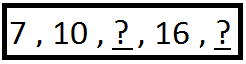

Explore and Discover!
Explore and Discover!
Look at the sequence of numbers.
What are the missing terms?
A list of numbers arranged in a row is called a number sequence.
Each number in the sequence is called a term.
To find the missing term/s in a number sequence , we must first look for its pattern.
Look closely at 7 , 10 , ? , 16 , ? . In the number sequence , each term is formed by adding 3 to the preceding number. So , the missing terms are 10 + 3 = 13 and 16 + 3 = 19 . See to it that the pattern is true to the whole sequence from 7 to 19.
Here is another example of a number sequence.
Find the missing terms : 45 , 37 , 29 , ? , ? , 5
The sequence of numbers is in descending order. Get the difference between 47 and 37 . In like manner with 37 and 29 , the difference is 8. The missing terms are 21 and 13 since 12 is 8 more than the last term which is 5.
Let's Practice!Find the missing terms in each of the following number sequence.
1. 23, 25, 27, 29, 31 33
2. 32, 37, 42, 47, 52, 57
3. 85, 81, 77, 73, 69, 65
4. 64, 57, 50, 43, 36, 29
5. 1, 2, 4, 7, 11, 16
6. 2, 2, 4, 12, 48, 240
7. 1, 2, 4, 8, 16, 32
8. 1, 3, 9, 27, 81, 243
9. 1, 5, 25, 125, 625
10. 5, 6, 8, 11, 15, 20